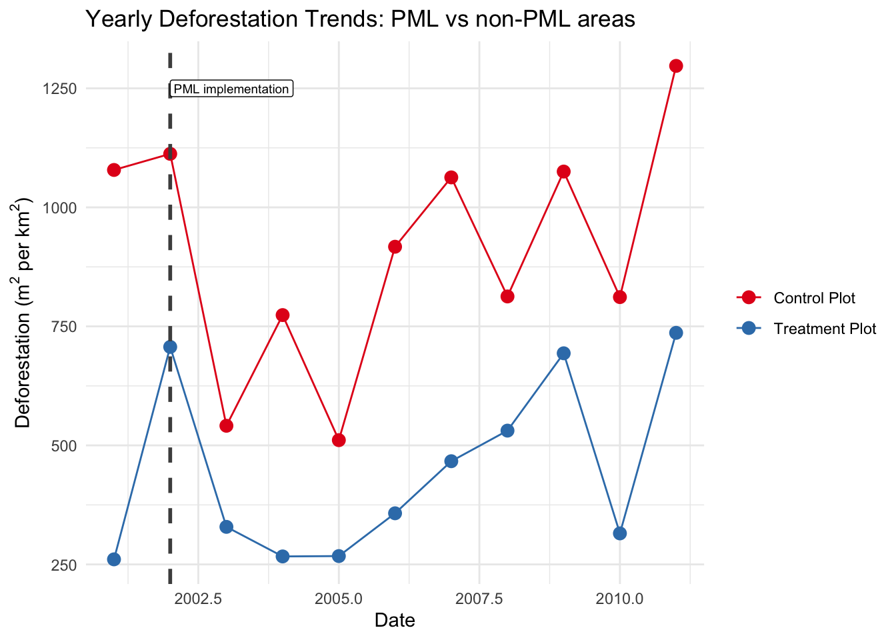
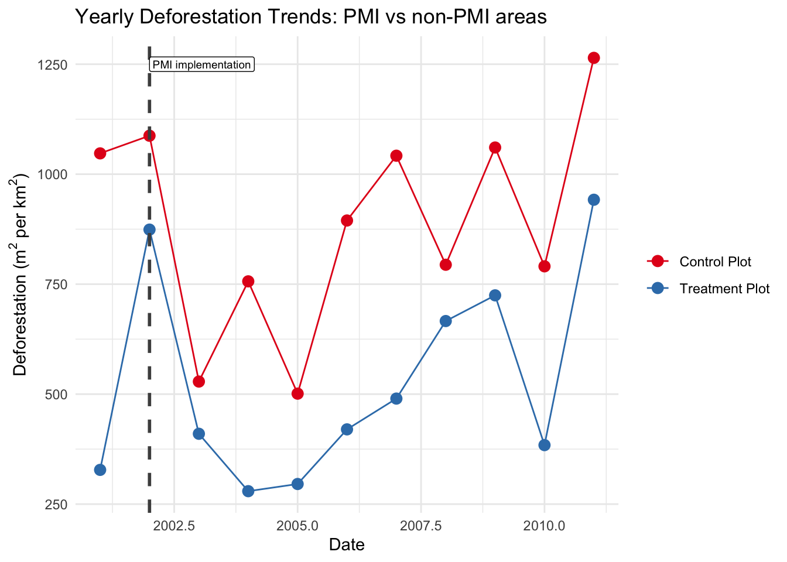
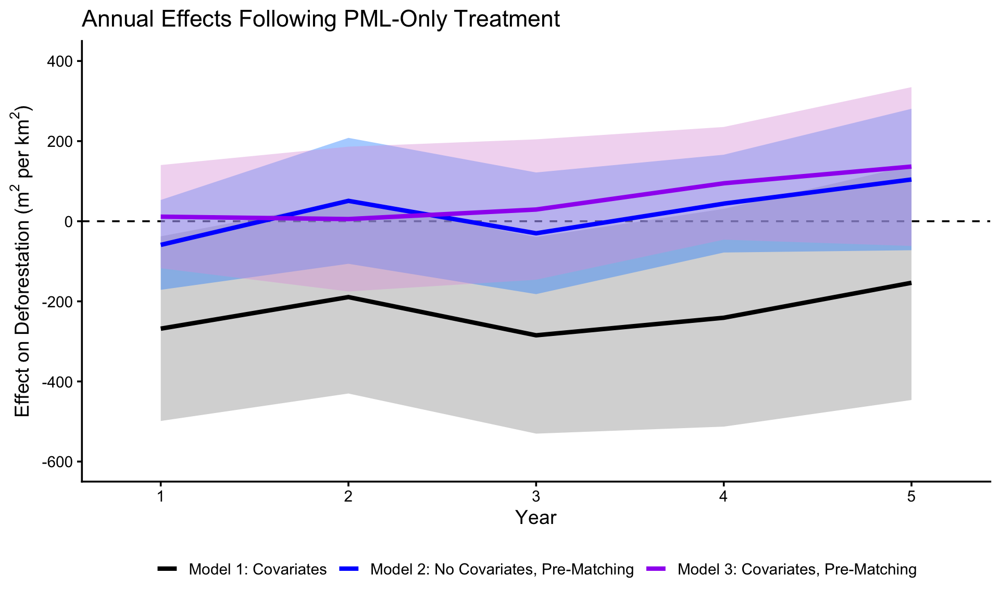
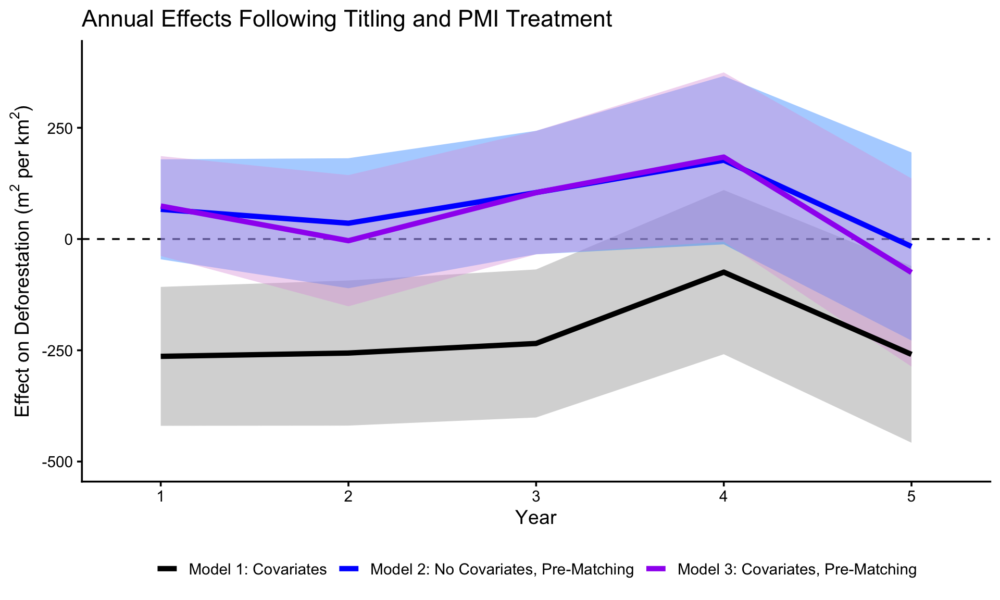

# Load in necessary Libraries
library(tidyverse)
library(dplyr)
library(MatchIt)Evaluating A DiD Study: Land Titling in Ecuador
About our Replication:
An R script that runs the analyses made in the study was publicly available along with the associated study data. While the code provided a framework for us to replicate the study, we’ve refactored and tidy-ed the code to make it more reproducible. We’ve also implemented different analysis methods within our replication due to the scale of the data, as authors have warned that the some aspects of the original code has long run times (over 10+ hours). Our approach in our replication is to implement the methods we’ve learned in class to compare our results to the original study, to further understand and justify the methodological steps made by authors.
Original analysis R code can be found here.
Data
# Read in the data.
data <- read_csv(here::here("data", "BHM_sample20.csv"))
# Treatment variables
data$PML <- ifelse(data$A352 == 0, 0, 1)
data$PMI <- ifelse(data$A352 >= 3, 1, 0) #Note: all PSUR intervention had PMI in 2003 and after
names(data)[287:298] <- c("fl.2001", "fl.2002", "fl.2003", "fl.2004", "fl.2005",
"fl.2006", "fl.2007", "fl.2008", "fl.2009", "fl.2010",
"fl.2011", "fl.2012")
data$toPeru.km <- data$A486/1000
# This function remakes the data frame with only the specified columns & NAs removed:
make <- function(data, names) {
# capture unquoted variable names.
vars <- as.character(substitute(names))[-1]
# Subset and remove NA rows.
data.make <- data[, vars, drop = FALSE]
data.make <- na.omit(data.make)
# Print number of observations.
cat("ob =", nrow(data.make), "\n")
return(data.make)
}# Cleaning the datasets based on years within the study time frame.
wave_2002 <- data %>%
# Keep A352 == 0 or 2
filter(A352 %in% c(0, 2)) %>%
mutate(
# Post PML totals + each year
fl_5yr_postPML = fl.2003 + fl.2004 + fl.2005 + fl.2006 + fl.2007,
fl_yr1 = fl.2003,
fl_yr2 = fl.2004,
fl_yr3 = fl.2005,
fl_yr4 = fl.2006,
fl_yr5 = fl.2007,
# Pre vars
fl_pre_5cell = fl.2001 + A393 + A461,
# Same as wave.2002[,314] - wave.2002[,287]
forest_pre = .[[314]] - .[[287]],
pop_den_1km_pre = A173,
pop_den_5km_pre = A176,
pop_den_10km_pre = A174,
dist_disturb_pre = A116,
wave = "two") %>%
# Final filters
filter(forest_pre > 450000, A346 == 0)
wave_2003 <- data %>%
filter(A352 %in% c(0, 3)) %>%
mutate(
# 5-year post-PML sum + each year
fl_5yr_postPML = fl.2004 + fl.2005 + fl.2006 + fl.2007 + fl.2008,
fl_yr1 = fl.2004,
fl_yr2 = fl.2005,
fl_yr3 = fl.2006,
fl_yr4 = fl.2007,
fl_yr5 = fl.2008,
# Pre variables
fl_pre_5cell = fl.2002 + A394 + A462,
# Forest.pre = col314 - rowSums(cols 287:288)
forest_pre = .[[314]] - rowSums(across(all_of(287:288)), na.rm = TRUE),
pop_den_1km_pre = A178,
pop_den_5km_pre = A181,
pop_den_10km_pre = A179,
dist_disturb_pre = A117,
wave = "three") %>%
filter(forest_pre > 450000, A346 == 0)
wave_2004 <- data %>%
filter(A352 == 0) %>%
mutate(
# 5-year post-PML sum + each year
fl_5yr_postPML = rowSums(across(fl.2005:fl.2009), na.rm = TRUE),
fl_yr1 = fl.2005,
fl_yr2 = fl.2006,
fl_yr3 = fl.2007,
fl_yr4 = fl.2008,
fl_yr5 = fl.2009,
# Pre variables
fl_pre_5cell = fl.2003 + A395 + A463,
# Forest.pre = col314 - rowSums(cols 287:289)
forest_pre = .[[314]] - rowSums(across(all_of(287:289)), na.rm = TRUE),
pop_den_1km_pre = A183,
pop_den_5km_pre = A186,
pop_den_10km_pre = A184,
dist_disturb_pre = A118,
wave = "four") %>%
filter(forest_pre > 450000, A346 == 0)
wave_2005 <- data %>%
filter(A352 %in% c(0, 5)) %>%
mutate(
# 5-year post-PML sum + each year
fl_5yr_postPML = rowSums(across(fl.2006:fl.2010), na.rm = TRUE),
fl_yr1 = fl.2006,
fl_yr2 = fl.2007,
fl_yr3 = fl.2008,
fl_yr4 = fl.2009,
fl_yr5 = fl.2010,
# Pre variables
fl_pre_5cell = fl.2004 + A396 + A464,
# Forest.pre = col314 - rowSums(cols 287:290)
forest_pre = .[[314]] - rowSums(across(all_of(287:290)), na.rm = TRUE),
pop_den_1km_pre = A188,
pop_den_5km_pre = A191,
pop_den_10km_pre = A189,
dist_disturb_pre = A119,
wave = "five") %>%
filter(forest_pre > 450000, A346 == 0)
wave_2006 <- data %>%
filter(A352 %in% c(0, 6)) %>%
mutate(
# 5-year post-PML sum + each year
fl_5yr_postPML = rowSums(across(fl.2007:fl.2011), na.rm = TRUE),
fl_yr1 = fl.2007,
fl_yr2 = fl.2008,
fl_yr3 = fl.2009,
fl_yr4 = fl.2010,
fl_yr5 = fl.2011,
# Pre variables
fl_pre_5cell = fl.2005 + A397 + A465,
# Forest.pre = col314 - rowSums(cols 287:291)
forest_pre = .[[314]] - rowSums(across(all_of(287:291)), na.rm = TRUE),
pop_den_1km_pre = A193,
pop_den_5km_pre = A196,
pop_den_10km_pre = A194,
dist_disturb_pre = A120,
wave = "six") %>%
filter(forest_pre > 450000, A346 == 0)
wave_2007 <- data %>%
filter(A352 %in% c(0, 7)) %>%
mutate(
# 5-year post-PML sum + each year
fl_5yr_postPML = rowSums(across(fl.2008:fl.2012), na.rm = TRUE),
fl_yr1 = fl.2008,
fl_yr2 = fl.2009,
fl_yr3 = fl.2010,
fl_yr4 = fl.2011,
fl_yr5 = fl.2012,
# Pre variables
fl_pre_5cell = fl.2006 + A398 + A466,
# Forest.pre = col314 - rowSums(cols 287:292)
forest_pre = .[[314]] - rowSums(across(all_of(287:292)), na.rm = TRUE),
pop_den_1km_pre = A198,
pop_den_5km_pre = A201,
pop_den_10km_pre = A199,
dist_disturb_pre = A121,
wave = "seven") %>%
filter(forest_pre > 450000, A346 == 0)
# Combine the different yearly datasets into one.
data_flat <- rbind(wave_2002, wave_2003, wave_2004, wave_2005, wave_2006, wave_2007)Data Description
The dataset used to reproduce the analysis in Buntaine et al. (2015) was constructed in GIS by overlaying several spatial datasets across a regular grid of 27,984 cells (~0.87 km² each) covering the Morona-Santiago province of Ecuador. Each grid cell represents the fundamental unit of observation, and raster and vector datasets covering the period 2001–2012 were extracted to the centroid of each cell to produce a tabular database. The raw dataset contains 27,984 observations with 395 variables. Each observation is identified with an OBJECTID and a pointID, geographic coordinates, and the relevant covariates in the study, encoded as A100 to A486 with variable definitions stored in associated metadata.
This dataset was cleaned to produce a “flat” dataset where each row is a plot-wave combination. Waves (A352) to represent the years where land titling was implemented under PSUR. Wave 2 corresponds to communities titled in 2002, wave 3 to communities titled in 2003, and so on through wave 7. Untreated control plots (A352 == 0) appear in multiple waves, each time with covariates and outcomes aligned to each wave’s treatment year, allowing them to serve as counterfactuals. Each plot-wave combination has variables associated with the outcome (fl.5yr.postPML) or forest loss five years after wave’s treatment, pre-treatment covariates measured before the wave’s treatment, and an associated control plot.
Pre-treatment covariates are constructed in two ways. Time-varying covariates, such as population density (pop.den.1km.pre), are measured annually and stored in successive columns, with each wave assigned the most recent pre-treatment value. Forest loss was calculated spatially and is a composite of three calculations: 1) forest loss in the plot itself in the year before treatment (e.g., fl.2001); 2) forest loss in the surrounding 3x3 neighborhood, and 3) forest loss in the surrounding 5x5 neighborhood. To produce fl.pre, forest loss was subtracted from total forest cover. Other variables such as distance to roads, distance to rivers, protected area status, were fixed in the dataset since they do not change year to year.
Outcome variables were PML (Plan de Manejo para Legalización) and PMI (Plan de Manejo Integral). PML (A352 == 2) was determined by plots that received land title without a community management plan in 2002 and PMI was determined by plots titled in 2003 or later (A352 == 3, etc.) that received a title and management plan.
Study Replication
Assumptions
What assumptions must hold for the estimates to be causally valid?
Parallel Assumption: Treatment and Control groups were moving in the same direction before the intervention began.
# create a line graph (PML) for the parallel trends assumption
# select the yearly deforestation of the treatment and control groups for PML and PMI
parallel <- data %>%
select(fl.2001, fl.2002, fl.2003, fl.2004, fl.2005, fl.2006, fl.2007, fl.2008,
fl.2009, fl.2010, fl.2011, PML, PMI) %>%
pivot_longer(cols = starts_with("fl."),
names_to = "year",
values_to = "deforestation") %>%
mutate(year = as.numeric(str_remove(year, "fl\\.")))
parallel_trends_PML <- parallel %>%
group_by(year, PML) %>%
summarise(
mean_deforestation = mean(deforestation, na.rm = TRUE),
.groups = "drop")
ggplot(parallel_trends_PML,
aes(x = year, y = mean_deforestation, color = factor(PML))) +
geom_line() +
geom_point(size = 3) +
# vertical line for the implement of treatment
geom_vline(xintercept = 2002,
linetype = "dashed",
color = "gray30",
linewidth = 1) +
annotate("label",
x = 2002,
y = 1250,
label = "PML implementation",
hjust = 0,
size = 2.5) +
labs(
title = "Yearly Deforestation Trends: PML vs non-PML areas",
x = "Date",
y = expression(paste("Deforestation (", m^2," per ", km^2, ")")),
color = "PML") +
theme_minimal() +
scale_color_brewer(palette = "Set1",
labels = c("0" = "Control Plot",
"1" = "Treatment Plot")) +
theme(legend.title = element_blank())
Assumption Interpretation:
It appears that before treatment, the study areas do not follow the same trends. In addition, the authors only include pre-treatment data from 2001 and beyond; this does not provide enough data to determine whether the treatment and control groups followed parallel trends. Therefore, this implies that the parallel trends assumption is not met, and therefore, the control groups may not provide a good counterfactual for the treatment group.
# create a line graph (PMI) for the parallel trends assumption
parallel_trends_PMI <- parallel %>%
group_by(year, PMI) %>%
summarise(
mean_deforestation = mean(deforestation, na.rm = TRUE),
.groups = "drop")
ggplot(parallel_trends_PMI,
aes(x = year, y = mean_deforestation, color = factor(PMI))) +
geom_line() +
geom_point(size = 3) +
# vertical line for the implement of treatment
geom_vline(xintercept = 2002,
linetype = "dashed",
color = "gray30",
linewidth = 1) +
annotate("label",
x = 2002,
y = 1250,
label = "PMI implementation",
hjust = 0,
size = 2.5) +
labs(
title = "Yearly Deforestation Trends: PMI vs non-PMI areas",
x = "Date",
y = expression(paste("Deforestation (", m^2," per ", km^2, ")"))) +
theme_minimal() +
scale_color_brewer(palette = "Set1",
labels = c("0" = "Control Plot",
"1" = "Treatment Plot")) +
theme(legend.title = element_blank())
Difference in Difference
# Subset data.
data_PMLonly_flat <- subset(data_flat, PML == 0 | (PML == 1 & PMI == 0))Remaking Figure 5 From Original Study
# model 1 is year-on-year decomposition of covariates
m1.PML1 <- lm(fl_yr1 ~ PML +
fl_pre_5cell + forest_pre + pop_den_5km_pre + dist_disturb_pre + A128 + A129 + A130 + A154 + A347 + A361 + A362, data = data_PMLonly_flat)
summary(m1.PML1)
Call:
lm(formula = fl_yr1 ~ PML + fl_pre_5cell + forest_pre + pop_den_5km_pre +
dist_disturb_pre + A128 + A129 + A130 + A154 + A347 + A361 +
A362, data = data_PMLonly_flat)
Residuals:
Min 1Q Median 3Q Max
-9201 -956 -463 -16 217949
Coefficients:
Estimate Std. Error t value Pr(>|t|)
(Intercept) 5.550e+03 1.424e+02 38.960 <2e-16 ***
PML -2.682e+02 1.152e+02 -2.327 0.0199 *
fl_pre_5cell 1.105e-02 2.563e-04 43.104 <2e-16 ***
forest_pre -4.804e-03 1.567e-04 -30.663 <2e-16 ***
pop_den_5km_pre 1.057e-01 3.459e-01 0.306 0.7600
dist_disturb_pre -1.194e-02 1.078e-03 -11.080 <2e-16 ***
A128 -8.303e-03 6.450e-04 -12.872 <2e-16 ***
A129 -4.060e-03 3.929e-03 -1.033 0.3014
A130 -1.752e-02 1.667e-03 -10.512 <2e-16 ***
A154 4.535e+01 2.104e+01 2.155 0.0311 *
A347 -2.668e+02 2.428e+01 -10.987 <2e-16 ***
A361 -4.197e-01 1.971e-02 -21.287 <2e-16 ***
A362 -8.915e+00 1.049e+00 -8.500 <2e-16 ***
---
Signif. codes: 0 '***' 0.001 '**' 0.01 '*' 0.05 '.' 0.1 ' ' 1
Residual standard error: 3245 on 136574 degrees of freedom
(2921 observations deleted due to missingness)
Multiple R-squared: 0.05852, Adjusted R-squared: 0.05844
F-statistic: 707.5 on 12 and 136574 DF, p-value: < 2.2e-16m1.PML2 <- lm(fl_yr2 ~ PML + fl_pre_5cell + forest_pre + pop_den_5km_pre + dist_disturb_pre + A128 + A129 + A130 + A154 + A347 + A361 + A362, data = data_PMLonly_flat)
summary(m1.PML2)
Call:
lm(formula = fl_yr2 ~ PML + fl_pre_5cell + forest_pre + pop_den_5km_pre +
dist_disturb_pre + A128 + A129 + A130 + A154 + A347 + A361 +
A362, data = data_PMLonly_flat)
Residuals:
Min 1Q Median 3Q Max
-10957 -1008 -453 -5 163523
Coefficients:
Estimate Std. Error t value Pr(>|t|)
(Intercept) 5.602e+03 1.488e+02 37.644 < 2e-16 ***
PML -1.893e+02 1.204e+02 -1.573 0.115760
fl_pre_5cell 1.591e-02 2.677e-04 59.415 < 2e-16 ***
forest_pre -4.854e-03 1.637e-04 -29.655 < 2e-16 ***
pop_den_5km_pre 4.974e-01 3.614e-01 1.376 0.168733
dist_disturb_pre -7.081e-03 1.126e-03 -6.288 3.22e-10 ***
A128 -1.039e-02 6.738e-04 -15.424 < 2e-16 ***
A129 -1.537e-02 4.104e-03 -3.745 0.000181 ***
A130 -1.686e-02 1.741e-03 -9.683 < 2e-16 ***
A154 4.770e+01 2.198e+01 2.170 0.029995 *
A347 -2.733e+02 2.537e+01 -10.774 < 2e-16 ***
A361 -4.320e-01 2.059e-02 -20.977 < 2e-16 ***
A362 -9.340e+00 1.096e+00 -8.524 < 2e-16 ***
---
Signif. codes: 0 '***' 0.001 '**' 0.01 '*' 0.05 '.' 0.1 ' ' 1
Residual standard error: 3390 on 136574 degrees of freedom
(2921 observations deleted due to missingness)
Multiple R-squared: 0.0751, Adjusted R-squared: 0.07502
F-statistic: 924.1 on 12 and 136574 DF, p-value: < 2.2e-16m1.PML3 <- lm(fl_yr3 ~ PML + fl_pre_5cell + forest_pre + pop_den_5km_pre + dist_disturb_pre + A128 + A129 + A130 + A154 + A347 + A361 + A362, data = data_PMLonly_flat)
summary(m1.PML3)
Call:
lm(formula = fl_yr3 ~ PML + fl_pre_5cell + forest_pre + pop_den_5km_pre +
dist_disturb_pre + A128 + A129 + A130 + A154 + A347 + A361 +
A362, data = data_PMLonly_flat)
Residuals:
Min 1Q Median 3Q Max
-9056 -1078 -514 -8 163273
Coefficients:
Estimate Std. Error t value Pr(>|t|)
(Intercept) 5.981e+03 1.517e+02 39.413 < 2e-16 ***
PML -2.848e+02 1.227e+02 -2.320 0.020345 *
fl_pre_5cell 1.151e-02 2.730e-04 42.149 < 2e-16 ***
forest_pre -5.005e-03 1.669e-04 -29.986 < 2e-16 ***
pop_den_5km_pre -2.306e-01 3.685e-01 -0.626 0.531574
dist_disturb_pre -9.907e-03 1.148e-03 -8.628 < 2e-16 ***
A128 -1.157e-02 6.871e-04 -16.831 < 2e-16 ***
A129 -1.483e-02 4.185e-03 -3.543 0.000395 ***
A130 -2.097e-02 1.775e-03 -11.810 < 2e-16 ***
A154 6.946e+01 2.241e+01 3.099 0.001941 **
A347 -3.248e+02 2.587e+01 -12.559 < 2e-16 ***
A361 -4.652e-01 2.100e-02 -22.151 < 2e-16 ***
A362 -1.071e+01 1.117e+00 -9.582 < 2e-16 ***
---
Signif. codes: 0 '***' 0.001 '**' 0.01 '*' 0.05 '.' 0.1 ' ' 1
Residual standard error: 3457 on 136574 degrees of freedom
(2921 observations deleted due to missingness)
Multiple R-squared: 0.06208, Adjusted R-squared: 0.062
F-statistic: 753.4 on 12 and 136574 DF, p-value: < 2.2e-16m1.PML4 <- lm(fl_yr4 ~ PML + fl_pre_5cell + forest_pre + pop_den_5km_pre + dist_disturb_pre + A128 + A129 + A130 + A154 + A347 + A361 + A362, data = data_PMLonly_flat)
summary(m1.PML4)
Call:
lm(formula = fl_yr4 ~ PML + fl_pre_5cell + forest_pre + pop_den_5km_pre +
dist_disturb_pre + A128 + A129 + A130 + A154 + A347 + A361 +
A362, data = data_PMLonly_flat)
Residuals:
Min 1Q Median 3Q Max
-13707 -1136 -522 13 163349
Coefficients:
Estimate Std. Error t value Pr(>|t|)
(Intercept) 5.591e+03 1.680e+02 33.280 < 2e-16 ***
PML -2.409e+02 1.359e+02 -1.773 0.0762 .
fl_pre_5cell 2.037e-02 3.023e-04 67.382 < 2e-16 ***
forest_pre -4.706e-03 1.848e-04 -25.467 < 2e-16 ***
pop_den_5km_pre -7.502e-01 4.080e-01 -1.839 0.0660 .
dist_disturb_pre -1.005e-02 1.271e-03 -7.907 2.66e-15 ***
A128 -7.916e-03 7.608e-04 -10.405 < 2e-16 ***
A129 -2.200e-02 4.634e-03 -4.747 2.06e-06 ***
A130 -1.929e-02 1.966e-03 -9.812 < 2e-16 ***
A154 1.030e+02 2.482e+01 4.151 3.31e-05 ***
A347 -2.492e+02 2.864e+01 -8.700 < 2e-16 ***
A361 -4.330e-01 2.325e-02 -18.621 < 2e-16 ***
A362 -1.415e+01 1.237e+00 -11.439 < 2e-16 ***
---
Signif. codes: 0 '***' 0.001 '**' 0.01 '*' 0.05 '.' 0.1 ' ' 1
Residual standard error: 3828 on 136574 degrees of freedom
(2921 observations deleted due to missingness)
Multiple R-squared: 0.0827, Adjusted R-squared: 0.08262
F-statistic: 1026 on 12 and 136574 DF, p-value: < 2.2e-16m1.PML5 <- lm(fl_yr5 ~ PML + fl_pre_5cell + forest_pre + pop_den_5km_pre + dist_disturb_pre + A128 + A129 + A130 + A154 + A347 + A361 + A362, data = data_PMLonly_flat)
summary(m1.PML5)
Call:
lm(formula = fl_yr5 ~ PML + fl_pre_5cell + forest_pre + pop_den_5km_pre +
dist_disturb_pre + A128 + A129 + A130 + A154 + A347 + A361 +
A362, data = data_PMLonly_flat)
Residuals:
Min 1Q Median 3Q Max
-13834 -1291 -606 29 160913
Coefficients:
Estimate Std. Error t value Pr(>|t|)
(Intercept) 6.390e+03 1.809e+02 35.328 < 2e-16 ***
PML -1.536e+02 1.463e+02 -1.050 0.294
fl_pre_5cell 2.067e-02 3.254e-04 63.526 < 2e-16 ***
forest_pre -5.189e-03 1.989e-04 -26.086 < 2e-16 ***
pop_den_5km_pre -2.730e-01 4.393e-01 -0.622 0.534
dist_disturb_pre -1.470e-02 1.369e-03 -10.740 < 2e-16 ***
A128 -9.540e-03 8.190e-04 -11.648 < 2e-16 ***
A129 -3.149e-02 4.989e-03 -6.312 2.76e-10 ***
A130 -2.237e-02 2.116e-03 -10.571 < 2e-16 ***
A154 1.114e+02 2.672e+01 4.170 3.04e-05 ***
A347 -2.541e+02 3.083e+01 -8.243 < 2e-16 ***
A361 -5.140e-01 2.503e-02 -20.534 < 2e-16 ***
A362 -1.755e+01 1.332e+00 -13.177 < 2e-16 ***
---
Signif. codes: 0 '***' 0.001 '**' 0.01 '*' 0.05 '.' 0.1 ' ' 1
Residual standard error: 4121 on 136574 degrees of freedom
(2921 observations deleted due to missingness)
Multiple R-squared: 0.08401, Adjusted R-squared: 0.08393
F-statistic: 1044 on 12 and 136574 DF, p-value: < 2.2e-16# Matching for PML data.
data_make <- make(data_PMLonly_flat,
c(fl_5yr_postPML, fl_yr1, fl_yr2, fl_yr3, fl_yr4, fl_yr5, PML, fl_pre_5cell, forest_pre, pop_den_5km_pre, dist_disturb_pre, A128, A129, A130, A154, A347, A361, A362))ob = 136587 # Using the Mahlanobis matching method
out_PMLonly_flat <- matchit(PML ~ fl_pre_5cell + forest_pre + pop_den_5km_pre + dist_disturb_pre +
A128 + A129 + A130 + A154 + A347 + A361 + A362,
data = data_make,
method = "nearest",
distance = "mahalanobis",
discard = "none",
ratio = 1)
s_PML <- summary(out_PMLonly_flat,interactions = T, standardize = T)
# Summary of covariate balance after matching
s_sum_matched_PML <- as.data.frame(s_PML$sum.matched)
# Matched dataframe.
data_PMLonly_flat_matched <- match.data(out_PMLonly_flat)# Model 2 is year-on-year decomposition of no covariates and pre-matching.
m2.PML1 <- lm(fl_yr1 ~ PML, weights = weights, data = data_PMLonly_flat_matched)
summary(m2.PML1)
Call:
lm(formula = fl_yr1 ~ PML, data = data_PMLonly_flat_matched,
weights = weights)
Residuals:
Min 1Q Median 3Q Max
-209.6 -209.6 -150.6 -150.6 21218.4
Coefficients:
Estimate Std. Error t value Pr(>|t|)
(Intercept) 209.62 39.65 5.286 1.41e-07 ***
PML -59.07 56.08 -1.053 0.292
---
Signif. codes: 0 '***' 0.001 '**' 0.01 '*' 0.05 '.' 0.1 ' ' 1
Residual standard error: 1150 on 1680 degrees of freedom
Multiple R-squared: 0.0006599, Adjusted R-squared: 6.501e-05
F-statistic: 1.109 on 1 and 1680 DF, p-value: 0.2924m2.PML2 <- lm(fl_yr2 ~ PML, weights = weights, data = data_PMLonly_flat_matched)
summary(m2.PML2)
Call:
lm(formula = fl_yr2 ~ PML, data = data_PMLonly_flat_matched,
weights = weights)
Residuals:
Min 1Q Median 3Q Max
-236 -236 -185 -185 37801
Coefficients:
Estimate Std. Error t value Pr(>|t|)
(Intercept) 185.30 55.58 3.334 0.000874 ***
PML 50.96 78.60 0.648 0.516845
---
Signif. codes: 0 '***' 0.001 '**' 0.01 '*' 0.05 '.' 0.1 ' ' 1
Residual standard error: 1612 on 1680 degrees of freedom
Multiple R-squared: 0.0002502, Adjusted R-squared: -0.0003449
F-statistic: 0.4204 on 1 and 1680 DF, p-value: 0.5168m2.PML3 <- lm(fl_yr3 ~ PML, weights = weights, data = data_PMLonly_flat_matched)
summary(m2.PML3)
Call:
lm(formula = fl_yr3 ~ PML, data = data_PMLonly_flat_matched,
weights = weights)
Residuals:
Min 1Q Median 3Q Max
-237.4 -237.4 -207.3 -207.3 29956.6
Coefficients:
Estimate Std. Error t value Pr(>|t|)
(Intercept) 237.42 53.70 4.422 1.04e-05 ***
PML -30.11 75.94 -0.397 0.692
---
Signif. codes: 0 '***' 0.001 '**' 0.01 '*' 0.05 '.' 0.1 ' ' 1
Residual standard error: 1557 on 1680 degrees of freedom
Multiple R-squared: 9.359e-05, Adjusted R-squared: -0.0005016
F-statistic: 0.1572 on 1 and 1680 DF, p-value: 0.6918m2.PML4 <- lm(fl_yr4 ~ PML, weights = weights, data = data_PMLonly_flat_matched)
summary(m2.PML4)
Call:
lm(formula = fl_yr4 ~ PML, data = data_PMLonly_flat_matched,
weights = weights)
Residuals:
Min 1Q Median 3Q Max
-213.1 -213.1 -169.1 -169.1 20240.9
Coefficients:
Estimate Std. Error t value Pr(>|t|)
(Intercept) 169.09 43.18 3.916 9.35e-05 ***
PML 44.01 61.06 0.721 0.471
---
Signif. codes: 0 '***' 0.001 '**' 0.01 '*' 0.05 '.' 0.1 ' ' 1
Residual standard error: 1252 on 1680 degrees of freedom
Multiple R-squared: 0.0003091, Adjusted R-squared: -0.0002859
F-statistic: 0.5195 on 1 and 1680 DF, p-value: 0.4712m2.PML5 <- lm(fl_yr5 ~ PML, weights = weights, data = data_PMLonly_flat_matched)
summary(m2.PML5)
Call:
lm(formula = fl_yr5 ~ PML, data = data_PMLonly_flat_matched,
weights = weights)
Residuals:
Min 1Q Median 3Q Max
-385.7 -385.7 -281.4 -281.4 21042.3
Coefficients:
Estimate Std. Error t value Pr(>|t|)
(Intercept) 281.43 62.43 4.508 6.99e-06 ***
PML 104.23 88.28 1.181 0.238
---
Signif. codes: 0 '***' 0.001 '**' 0.01 '*' 0.05 '.' 0.1 ' ' 1
Residual standard error: 1810 on 1680 degrees of freedom
Multiple R-squared: 0.000829, Adjusted R-squared: 0.0002343
F-statistic: 1.394 on 1 and 1680 DF, p-value: 0.2379# Model 3 is year-on-year decomposition of covariates and pre-matching.
m3.PML1 <- lm(fl_yr1 ~ PML + fl_pre_5cell + forest_pre + pop_den_5km_pre + dist_disturb_pre + A128 + A129 + A130 + A154 + A347 + A361 + A362, weights = weights, data = data_PMLonly_flat_matched)
summary(m3.PML1)
Call:
lm(formula = fl_yr1 ~ PML + fl_pre_5cell + forest_pre + pop_den_5km_pre +
dist_disturb_pre + A128 + A129 + A130 + A154 + A347 + A361 +
A362, data = data_PMLonly_flat_matched, weights = weights)
Residuals:
Min 1Q Median 3Q Max
-2426.6 -272.9 -132.7 -1.6 21104.7
Coefficients:
Estimate Std. Error t value Pr(>|t|)
(Intercept) 2.448e+03 1.201e+03 2.038 0.04172 *
PML 1.148e+01 6.441e+01 0.178 0.85857
fl_pre_5cell 1.375e-02 2.846e-03 4.831 1.48e-06 ***
forest_pre -1.872e-03 1.341e-03 -1.397 0.16275
pop_den_5km_pre -1.135e+01 8.311e+00 -1.365 0.17238
dist_disturb_pre -1.029e-02 8.352e-03 -1.232 0.21829
A128 -8.717e-03 3.466e-03 -2.515 0.01201 *
A129 -1.235e-02 1.470e-02 -0.840 0.40096
A130 -1.276e-03 7.290e-03 -0.175 0.86110
A154 -2.155e+01 1.262e+02 -0.171 0.86439
A347 9.051e+01 1.177e+03 0.077 0.93869
A361 -2.061e-01 1.027e-01 -2.006 0.04498 *
A362 -9.294e+00 3.138e+00 -2.961 0.00311 **
---
Signif. codes: 0 '***' 0.001 '**' 0.01 '*' 0.05 '.' 0.1 ' ' 1
Residual standard error: 1128 on 1669 degrees of freedom
Multiple R-squared: 0.04499, Adjusted R-squared: 0.03812
F-statistic: 6.552 on 12 and 1669 DF, p-value: 1.497e-11m3.PML2 <- lm(fl_yr2 ~ PML + fl_pre_5cell + forest_pre + pop_den_5km_pre + dist_disturb_pre + A128 + A129 + A130 + A154 + A347 + A361 + A362, weights = weights, data = data_PMLonly_flat_matched)
summary(m3.PML2)
Call:
lm(formula = fl_yr2 ~ PML + fl_pre_5cell + forest_pre + pop_den_5km_pre +
dist_disturb_pre + A128 + A129 + A130 + A154 + A347 + A361 +
A362, data = data_PMLonly_flat_matched, weights = weights)
Residuals:
Min 1Q Median 3Q Max
-2737 -351 -172 49 36484
Coefficients:
Estimate Std. Error t value Pr(>|t|)
(Intercept) 7.103e+03 1.686e+03 4.213 2.65e-05 ***
PML 5.424e+00 9.039e+01 0.060 0.952159
fl_pre_5cell 1.569e-02 3.994e-03 3.927 8.95e-05 ***
forest_pre -7.288e-03 1.881e-03 -3.873 0.000112 ***
pop_den_5km_pre 1.816e+01 1.166e+01 1.557 0.119569
dist_disturb_pre -6.948e-03 1.172e-02 -0.593 0.553404
A128 -1.060e-02 4.864e-03 -2.180 0.029392 *
A129 -3.574e-02 2.063e-02 -1.733 0.083369 .
A130 8.172e-03 1.023e-02 0.799 0.424499
A154 2.197e+01 1.771e+02 0.124 0.901264
A347 -1.064e+03 1.651e+03 -0.644 0.519533
A361 -4.544e-01 1.441e-01 -3.153 0.001646 **
A362 -1.653e+01 4.404e+00 -3.754 0.000180 ***
---
Signif. codes: 0 '***' 0.001 '**' 0.01 '*' 0.05 '.' 0.1 ' ' 1
Residual standard error: 1583 on 1669 degrees of freedom
Multiple R-squared: 0.04213, Adjusted R-squared: 0.03525
F-statistic: 6.118 on 12 and 1669 DF, p-value: 1.316e-10m3.PML3 <- lm(fl_yr3 ~ PML + fl_pre_5cell + forest_pre + pop_den_5km_pre + dist_disturb_pre + A128 + A129 + A130 + A154 + A347 + A361 + A362, weights = weights, data = data_PMLonly_flat_matched)
summary(m3.PML3)
Call:
lm(formula = fl_yr3 ~ PML + fl_pre_5cell + forest_pre + pop_den_5km_pre +
dist_disturb_pre + A128 + A129 + A130 + A154 + A347 + A361 +
A362, data = data_PMLonly_flat_matched, weights = weights)
Residuals:
Min 1Q Median 3Q Max
-2060.1 -363.0 -178.8 6.8 29520.2
Coefficients:
Estimate Std. Error t value Pr(>|t|)
(Intercept) 5.325e+03 1.634e+03 3.259 0.001141 **
PML 2.923e+01 8.760e+01 0.334 0.738717
fl_pre_5cell 1.039e-02 3.871e-03 2.685 0.007334 **
forest_pre -4.856e-03 1.824e-03 -2.663 0.007823 **
pop_den_5km_pre -5.936e+00 1.130e+01 -0.525 0.599572
dist_disturb_pre -3.821e-03 1.136e-02 -0.336 0.736642
A128 -1.635e-02 4.714e-03 -3.468 0.000538 ***
A129 -3.822e-02 1.999e-02 -1.912 0.056083 .
A130 -8.647e-04 9.914e-03 -0.087 0.930511
A154 2.625e+00 1.716e+02 0.015 0.987795
A347 -5.106e+02 1.600e+03 -0.319 0.749705
A361 -3.526e-01 1.397e-01 -2.524 0.011690 *
A362 -1.580e+01 4.268e+00 -3.701 0.000222 ***
---
Signif. codes: 0 '***' 0.001 '**' 0.01 '*' 0.05 '.' 0.1 ' ' 1
Residual standard error: 1534 on 1669 degrees of freedom
Multiple R-squared: 0.03593, Adjusted R-squared: 0.029
F-statistic: 5.183 on 12 and 1669 DF, p-value: 1.334e-08m3.PML4 <- lm(fl_yr4 ~ PML + fl_pre_5cell + forest_pre + pop_den_5km_pre + dist_disturb_pre + A128 + A129 + A130 + A154 + A347 + A361 + A362, weights = weights, data = data_PMLonly_flat_matched)
summary(m3.PML4)
Call:
lm(formula = fl_yr4 ~ PML + fl_pre_5cell + forest_pre + pop_den_5km_pre +
dist_disturb_pre + A128 + A129 + A130 + A154 + A347 + A361 +
A362, data = data_PMLonly_flat_matched, weights = weights)
Residuals:
Min 1Q Median 3Q Max
-1684.3 -328.3 -143.5 31.1 19938.7
Coefficients:
Estimate Std. Error t value Pr(>|t|)
(Intercept) 2.539e+03 1.312e+03 1.936 0.053087 .
PML 9.472e+01 7.032e+01 1.347 0.178152
fl_pre_5cell 8.392e-03 3.108e-03 2.701 0.006992 **
forest_pre -1.615e-03 1.464e-03 -1.103 0.269977
pop_den_5km_pre 4.064e+00 9.074e+00 0.448 0.654273
dist_disturb_pre -1.884e-02 9.118e-03 -2.066 0.038937 *
A128 -3.859e-03 3.784e-03 -1.020 0.307987
A129 -4.432e-02 1.605e-02 -2.762 0.005814 **
A130 -3.000e-03 7.958e-03 -0.377 0.706249
A154 -1.946e+02 1.377e+02 -1.413 0.157833
A347 2.002e+02 1.285e+03 0.156 0.876153
A361 -2.152e-01 1.121e-01 -1.919 0.055163 .
A362 -1.159e+01 3.426e+00 -3.383 0.000734 ***
---
Signif. codes: 0 '***' 0.001 '**' 0.01 '*' 0.05 '.' 0.1 ' ' 1
Residual standard error: 1231 on 1669 degrees of freedom
Multiple R-squared: 0.0395, Adjusted R-squared: 0.03259
F-statistic: 5.719 on 12 and 1669 DF, p-value: 9.548e-10m3.PML5 <- lm(fl_yr5 ~ PML + fl_pre_5cell + forest_pre + pop_den_5km_pre + dist_disturb_pre + A128 + A129 + A130 + A154 + A347 + A361 + A362, weights = weights, data = data_PMLonly_flat_matched)
summary(m3.PML5)
Call:
lm(formula = fl_yr5 ~ PML + fl_pre_5cell + forest_pre + pop_den_5km_pre +
dist_disturb_pre + A128 + A129 + A130 + A154 + A347 + A361 +
A362, data = data_PMLonly_flat_matched, weights = weights)
Residuals:
Min 1Q Median 3Q Max
-5491.3 -489.8 -198.9 73.5 19063.5
Coefficients:
Estimate Std. Error t value Pr(>|t|)
(Intercept) 5.289e+03 1.849e+03 2.860 0.00429 **
PML 1.365e+02 9.915e+01 1.377 0.16874
fl_pre_5cell 3.484e-02 4.382e-03 7.951 3.37e-15 ***
forest_pre -4.446e-03 2.064e-03 -2.154 0.03135 *
pop_den_5km_pre 9.527e+00 1.279e+01 0.745 0.45659
dist_disturb_pre -1.670e-02 1.286e-02 -1.299 0.19409
A128 -1.479e-02 5.336e-03 -2.771 0.00564 **
A129 -4.686e-02 2.263e-02 -2.071 0.03851 *
A130 7.591e-03 1.122e-02 0.676 0.49884
A154 -2.247e+02 1.942e+02 -1.157 0.24747
A347 -2.385e+02 1.811e+03 -0.132 0.89527
A361 -4.050e-01 1.581e-01 -2.561 0.01052 *
A362 -2.420e+01 4.831e+00 -5.009 6.04e-07 ***
---
Signif. codes: 0 '***' 0.001 '**' 0.01 '*' 0.05 '.' 0.1 ' ' 1
Residual standard error: 1736 on 1669 degrees of freedom
Multiple R-squared: 0.08708, Adjusted R-squared: 0.08051
F-statistic: 13.27 on 12 and 1669 DF, p-value: < 2.2e-16# Year by year effects of PML.
year <- seq(1:5)
m1.coef <- c(m1.PML1$coef[2], m1.PML2$coef[2], m1.PML3$coef[2], m1.PML4$coef[2], m1.PML5$coef[2])
m1.se <- c(coef(summary(m1.PML1))[2,2], coef(summary(m1.PML2))[2,2], coef(summary(m1.PML3))[2,2], coef(summary(m1.PML4))[2,2], coef(summary(m1.PML5))[2,2])
m2.coef <- c(m2.PML1$coef[2], m2.PML2$coef[2], m2.PML3$coef[2], m2.PML4$coef[2], m2.PML5$coef[2])
m2.se <- c(coef(summary(m2.PML1))[2,2], coef(summary(m2.PML2))[2,2], coef(summary(m2.PML3))[2,2], coef(summary(m2.PML4))[2,2], coef(summary(m2.PML5))[2,2])
m3.coef <- c(m3.PML1$coef[2], m3.PML2$coef[2], m3.PML3$coef[2], m3.PML4$coef[2], m3.PML5$coef[2])
m3.se <- c(coef(summary(m3.PML1))[2,2], coef(summary(m3.PML2))[2,2], coef(summary(m3.PML3))[2,2], coef(summary(m3.PML4))[2,2], coef(summary(m3.PML5))[2,2])Model 1 is a linear regression model using the outcome variables, forest loss (fl_yr) on the treatment, Land Legalization Plans (PML), and the different control variables, for each of the years between 2003 and 2007, using unmatched data. This is represented as model 1
Then our code matches data using the Mahalanobis method
Model 2 is a linear regression model using the outcome variable, forest loss (fl_yr) on the treatment, Land Legalization Plans (PML), with no control variables but using the weights from the matching method and the matched data.
Model 3 is a linear regression model using the outcome variable, forest loss (fl_yr) on the treatment, Land Legalization Plans (PML), including the control variables and the weights from the matching method and the matched data.
These models above are used to recreate Figure 5.
# Graphing Figure 5 with our results.
df_5 <- data.frame(
year = rep(year, 3),
coef = c(m1.coef, m2.coef, m3.coef),
se = c(m1.se, m2.se, m3.se),
model = factor(rep(c("Model 1", "Model 2", "Model 3"),
each = length(year)))) %>%
mutate(ymin = coef - 2 * se,
ymax = coef + 2 * se)
ggplot(df_5, aes(x = year, y = coef, color = model, fill = model)) +
geom_hline(yintercept = 0, linetype = 2) +
geom_ribbon(aes(ymin = ymin, ymax = ymax),
alpha = 0.4,
color = NA,
show.legend = FALSE) +
geom_line(linewidth = 1.5) +
coord_cartesian(xlim = c(0.8, 5.2),
ylim = c(-600, 400)) +
scale_fill_manual(
values = c(
"Model 1" = "grey60",
"Model 2" = "dodgerblue",
"Model 3" = "plum")) +
scale_color_manual(
values = c(
"Model 1" = "black",
"Model 2" = "blue",
"Model 3" = "purple"),
labels = c(
"Model 1" = "Model 1: Covariates",
"Model 2" = "Model 2: No Covariates, Pre-Matching",
"Model 3" = "Model 3: Covariates, Pre-Matching")) +
labs(
x = "Year",
y = expression(paste("Effect on Deforestation (", m^2," per ", km^2, ")")),
title = "Annual Effects Following PML-Only Treatment ") +
theme_classic(base_size = 14) +
theme(legend.title = element_blank(),
legend.position = "bottom")
Remaking Figure 7 From Original Study
The next models use supplementary management plans (PMI) as the treatment.
# Subset data.
data_PMI_flat <- subset(data_flat, PML == 0 | (PML == 1 & PMI == 1))# Model 1 is year-on-year decomposition of covariates and NO pre-matching.
m1.1 <- lm(fl_yr1 ~ PMI + fl_pre_5cell + forest_pre + pop_den_5km_pre + dist_disturb_pre + A128 + A129 + A130 + A154 + A347 + A361 + A362, data = data_PMI_flat)
summary(m1.1)
Call:
lm(formula = fl_yr1 ~ PMI + fl_pre_5cell + forest_pre + pop_den_5km_pre +
dist_disturb_pre + A128 + A129 + A130 + A154 + A347 + A361 +
A362, data = data_PMI_flat)
Residuals:
Min 1Q Median 3Q Max
-9222 -954 -462 -17 217953
Coefficients:
Estimate Std. Error t value Pr(>|t|)
(Intercept) 5.564e+03 1.419e+02 39.222 < 2e-16 ***
PMI -2.636e+02 7.803e+01 -3.378 0.00073 ***
fl_pre_5cell 1.108e-02 2.556e-04 43.327 < 2e-16 ***
forest_pre -4.820e-03 1.561e-04 -30.878 < 2e-16 ***
pop_den_5km_pre 1.053e-01 3.453e-01 0.305 0.76040
dist_disturb_pre -1.182e-02 1.069e-03 -11.057 < 2e-16 ***
A128 -8.326e-03 6.389e-04 -13.032 < 2e-16 ***
A129 -4.200e-03 3.910e-03 -1.074 0.28279
A130 -1.776e-02 1.664e-03 -10.669 < 2e-16 ***
A154 4.597e+01 2.084e+01 2.205 0.02742 *
A347 -2.638e+02 2.400e+01 -10.992 < 2e-16 ***
A361 -4.205e-01 1.965e-02 -21.400 < 2e-16 ***
A362 -8.987e+00 1.043e+00 -8.617 < 2e-16 ***
---
Signif. codes: 0 '***' 0.001 '**' 0.01 '*' 0.05 '.' 0.1 ' ' 1
Residual standard error: 3239 on 137542 degrees of freedom
(2943 observations deleted due to missingness)
Multiple R-squared: 0.05865, Adjusted R-squared: 0.05857
F-statistic: 714.1 on 12 and 137542 DF, p-value: < 2.2e-16m1.2 <- lm(fl_yr2 ~ PMI + fl_pre_5cell + forest_pre + pop_den_5km_pre + dist_disturb_pre + A128 + A129 + A130 + A154 + A347 + A361 + A362, data = data_PMI_flat)
summary(m1.2)
Call:
lm(formula = fl_yr2 ~ PMI + fl_pre_5cell + forest_pre + pop_den_5km_pre +
dist_disturb_pre + A128 + A129 + A130 + A154 + A347 + A361 +
A362, data = data_PMI_flat)
Residuals:
Min 1Q Median 3Q Max
-10962 -1006 -452 -5 163522
Coefficients:
Estimate Std. Error t value Pr(>|t|)
(Intercept) 5.626e+03 1.482e+02 37.964 < 2e-16 ***
PMI -2.562e+02 8.152e+01 -3.142 0.001677 **
fl_pre_5cell 1.591e-02 2.671e-04 59.580 < 2e-16 ***
forest_pre -4.880e-03 1.631e-04 -29.925 < 2e-16 ***
pop_den_5km_pre 4.894e-01 3.607e-01 1.357 0.174807
dist_disturb_pre -7.082e-03 1.116e-03 -6.344 2.25e-10 ***
A128 -1.038e-02 6.674e-04 -15.549 < 2e-16 ***
A129 -1.490e-02 4.085e-03 -3.649 0.000264 ***
A130 -1.729e-02 1.739e-03 -9.943 < 2e-16 ***
A154 4.622e+01 2.177e+01 2.123 0.033784 *
A347 -2.666e+02 2.507e+01 -10.635 < 2e-16 ***
A361 -4.331e-01 2.053e-02 -21.101 < 2e-16 ***
A362 -9.496e+00 1.090e+00 -8.715 < 2e-16 ***
---
Signif. codes: 0 '***' 0.001 '**' 0.01 '*' 0.05 '.' 0.1 ' ' 1
Residual standard error: 3383 on 137542 degrees of freedom
(2943 observations deleted due to missingness)
Multiple R-squared: 0.07517, Adjusted R-squared: 0.07509
F-statistic: 931.6 on 12 and 137542 DF, p-value: < 2.2e-16m1.3 <- lm(fl_yr3 ~ PMI + fl_pre_5cell + forest_pre + pop_den_5km_pre + dist_disturb_pre + A128 + A129 + A130 + A154 + A347 + A361 + A362, data = data_PMI_flat)
summary(m1.3)
Call:
lm(formula = fl_yr3 ~ PMI + fl_pre_5cell + forest_pre + pop_den_5km_pre +
dist_disturb_pre + A128 + A129 + A130 + A154 + A347 + A361 +
A362, data = data_PMI_flat)
Residuals:
Min 1Q Median 3Q Max
-9069 -1077 -514 -11 163271
Coefficients:
Estimate Std. Error t value Pr(>|t|)
(Intercept) 6.000e+03 1.512e+02 39.693 < 2e-16 ***
PMI -2.346e+02 8.315e+01 -2.821 0.004781 **
fl_pre_5cell 1.153e-02 2.724e-04 42.311 < 2e-16 ***
forest_pre -5.023e-03 1.663e-04 -30.194 < 2e-16 ***
pop_den_5km_pre -2.304e-01 3.679e-01 -0.626 0.531195
dist_disturb_pre -9.739e-03 1.139e-03 -8.552 < 2e-16 ***
A128 -1.165e-02 6.808e-04 -17.110 < 2e-16 ***
A129 -1.497e-02 4.167e-03 -3.592 0.000328 ***
A130 -2.127e-02 1.773e-03 -11.991 < 2e-16 ***
A154 6.791e+01 2.221e+01 3.057 0.002233 **
A347 -3.191e+02 2.557e+01 -12.478 < 2e-16 ***
A361 -4.669e-01 2.094e-02 -22.296 < 2e-16 ***
A362 -1.092e+01 1.111e+00 -9.821 < 2e-16 ***
---
Signif. codes: 0 '***' 0.001 '**' 0.01 '*' 0.05 '.' 0.1 ' ' 1
Residual standard error: 3451 on 137542 degrees of freedom
(2943 observations deleted due to missingness)
Multiple R-squared: 0.06211, Adjusted R-squared: 0.06203
F-statistic: 759 on 12 and 137542 DF, p-value: < 2.2e-16m1.4 <- lm(fl_yr4 ~ PMI + fl_pre_5cell + forest_pre + pop_den_5km_pre + dist_disturb_pre + A128 + A129 + A130 + A154 + A347 + A361 + A362, data = data_PMI_flat)
summary(m1.4)
Call:
lm(formula = fl_yr4 ~ PMI + fl_pre_5cell + forest_pre + pop_den_5km_pre +
dist_disturb_pre + A128 + A129 + A130 + A154 + A347 + A361 +
A362, data = data_PMI_flat)
Residuals:
Min 1Q Median 3Q Max
-13721 -1137 -523 9 163347
Coefficients:
Estimate Std. Error t value Pr(>|t|)
(Intercept) 5.626e+03 1.676e+02 33.561 < 2e-16 ***
PMI -7.437e+01 9.222e+01 -0.806 0.4200
fl_pre_5cell 2.039e-02 3.021e-04 67.486 < 2e-16 ***
forest_pre -4.740e-03 1.845e-04 -25.692 < 2e-16 ***
pop_den_5km_pre -7.492e-01 4.080e-01 -1.836 0.0663 .
dist_disturb_pre -9.588e-03 1.263e-03 -7.592 3.17e-14 ***
A128 -8.165e-03 7.550e-04 -10.814 < 2e-16 ***
A129 -2.228e-02 4.621e-03 -4.823 1.42e-06 ***
A130 -1.921e-02 1.967e-03 -9.768 < 2e-16 ***
A154 1.001e+02 2.463e+01 4.063 4.85e-05 ***
A347 -2.556e+02 2.836e+01 -9.012 < 2e-16 ***
A361 -4.366e-01 2.322e-02 -18.800 < 2e-16 ***
A362 -1.427e+01 1.233e+00 -11.580 < 2e-16 ***
---
Signif. codes: 0 '***' 0.001 '**' 0.01 '*' 0.05 '.' 0.1 ' ' 1
Residual standard error: 3827 on 137542 degrees of freedom
(2943 observations deleted due to missingness)
Multiple R-squared: 0.08249, Adjusted R-squared: 0.08241
F-statistic: 1031 on 12 and 137542 DF, p-value: < 2.2e-16m1.5 <- lm(fl_yr5 ~ PMI + fl_pre_5cell + forest_pre + pop_den_5km_pre + dist_disturb_pre + A128 + A129 + A130 + A154 + A347 + A361 + A362, data = data_PMI_flat)
summary(m1.5)
Call:
lm(formula = fl_yr5 ~ PMI + fl_pre_5cell + forest_pre + pop_den_5km_pre +
dist_disturb_pre + A128 + A129 + A130 + A154 + A347 + A361 +
A362, data = data_PMI_flat)
Residuals:
Min 1Q Median 3Q Max
-13858 -1288 -606 27 160912
Coefficients:
Estimate Std. Error t value Pr(>|t|)
(Intercept) 6.426e+03 1.804e+02 35.623 < 2e-16 ***
PMI -2.592e+02 9.922e+01 -2.612 0.00899 **
fl_pre_5cell 2.071e-02 3.251e-04 63.698 < 2e-16 ***
forest_pre -5.235e-03 1.985e-04 -26.373 < 2e-16 ***
pop_den_5km_pre -2.802e-01 4.390e-01 -0.638 0.52330
dist_disturb_pre -1.454e-02 1.359e-03 -10.696 < 2e-16 ***
A128 -9.488e-03 8.124e-04 -11.679 < 2e-16 ***
A129 -3.108e-02 4.972e-03 -6.250 4.10e-10 ***
A130 -2.296e-02 2.116e-03 -10.850 < 2e-16 ***
A154 1.131e+02 2.650e+01 4.265 2.00e-05 ***
A347 -2.436e+02 3.051e+01 -7.985 1.42e-15 ***
A361 -5.172e-01 2.499e-02 -20.699 < 2e-16 ***
A362 -1.756e+01 1.326e+00 -13.237 < 2e-16 ***
---
Signif. codes: 0 '***' 0.001 '**' 0.01 '*' 0.05 '.' 0.1 ' ' 1
Residual standard error: 4118 on 137542 degrees of freedom
(2943 observations deleted due to missingness)
Multiple R-squared: 0.08384, Adjusted R-squared: 0.08376
F-statistic: 1049 on 12 and 137542 DF, p-value: < 2.2e-16# Matching for PMI data.
data_PMI_flat <- subset(data_flat, PML == 0 | (PML == 1 & PMI == 1))
data_make_2 <- make(data_PMI_flat,
c(fl_5yr_postPML, fl_yr1, fl_yr2, fl_yr3, fl_yr4, fl_yr5, PMI, fl_pre_5cell, forest_pre, pop_den_5km_pre, dist_disturb_pre, A128, A129, A130, A154, A347, A361, A362))ob = 137555 # Using the Mahlanobis matching method
out_PMI_flat <- matchit(
PMI ~ fl_pre_5cell + forest_pre + pop_den_5km_pre + dist_disturb_pre + A128 + A129 + A130 + A154 + A347 + A361 + A362,
data = data_make_2,
method = "nearest",
distance = "mahalanobis",
discard = "none",
ratio = 1)
s_PMI <- summary(out_PMI_flat, interactions = T, standardize = T)
# Summary of covariate balance after matching
s_sum_matched_PMI <- as.data.frame(s_PMI$sum.matched)
# Matched data frame.
data_PMI_flat_matched <- match.data(out_PMI_flat)# Model 2 is year-on-year decomposition of no covariates and pre-matching.
m2.1 <- lm(fl_yr1 ~ PMI, weights = weights, data = data_PMI_flat_matched)
summary(m2.1)
Call:
lm(formula = fl_yr1 ~ PMI, data = data_PMI_flat_matched, weights = weights)
Residuals:
Min 1Q Median 3Q Max
-402.2 -402.2 -335.4 -335.4 28884.6
Coefficients:
Estimate Std. Error t value Pr(>|t|)
(Intercept) 335.44 39.71 8.447 <2e-16 ***
PMI 66.76 56.16 1.189 0.235
---
Signif. codes: 0 '***' 0.001 '**' 0.01 '*' 0.05 '.' 0.1 ' ' 1
Residual standard error: 1689 on 3616 degrees of freedom
Multiple R-squared: 0.0003907, Adjusted R-squared: 0.0001143
F-statistic: 1.413 on 1 and 3616 DF, p-value: 0.2346m2.2 <- lm(fl_yr2 ~ PMI, weights = weights, data = data_PMI_flat_matched)
summary(m2.2)
Call:
lm(formula = fl_yr2 ~ PMI, data = data_PMI_flat_matched, weights = weights)
Residuals:
Min 1Q Median 3Q Max
-465 -465 -430 -430 56062
Coefficients:
Estimate Std. Error t value Pr(>|t|)
(Intercept) 429.66 51.65 8.319 <2e-16 ***
PMI 35.54 73.04 0.487 0.627
---
Signif. codes: 0 '***' 0.001 '**' 0.01 '*' 0.05 '.' 0.1 ' ' 1
Residual standard error: 2197 on 3616 degrees of freedom
Multiple R-squared: 6.546e-05, Adjusted R-squared: -0.0002111
F-statistic: 0.2367 on 1 and 3616 DF, p-value: 0.6266m2.3 <- lm(fl_yr3 ~ PMI, weights = weights, data = data_PMI_flat_matched)
summary(m2.3)
Call:
lm(formula = fl_yr3 ~ PMI, data = data_PMI_flat_matched, weights = weights)
Residuals:
Min 1Q Median 3Q Max
-563 -563 -459 -459 33631
Coefficients:
Estimate Std. Error t value Pr(>|t|)
(Intercept) 458.73 49.02 9.357 <2e-16 ***
PMI 104.45 69.33 1.507 0.132
---
Signif. codes: 0 '***' 0.001 '**' 0.01 '*' 0.05 '.' 0.1 ' ' 1
Residual standard error: 2085 on 3616 degrees of freedom
Multiple R-squared: 0.0006273, Adjusted R-squared: 0.0003509
F-statistic: 2.27 on 1 and 3616 DF, p-value: 0.132m2.4 <- lm(fl_yr4 ~ PMI, weights = weights, data = data_PMI_flat_matched)
summary(m2.4)
Call:
lm(formula = fl_yr4 ~ PMI, data = data_PMI_flat_matched, weights = weights)
Residuals:
Min 1Q Median 3Q Max
-745 -745 -568 -568 55747
Coefficients:
Estimate Std. Error t value Pr(>|t|)
(Intercept) 568.03 66.84 8.498 <2e-16 ***
PMI 177.14 94.53 1.874 0.061 .
---
Signif. codes: 0 '***' 0.001 '**' 0.01 '*' 0.05 '.' 0.1 ' ' 1
Residual standard error: 2843 on 3616 degrees of freedom
Multiple R-squared: 0.0009702, Adjusted R-squared: 0.000694
F-statistic: 3.512 on 1 and 3616 DF, p-value: 0.06101m2.5 <- lm(fl_yr5 ~ PMI, weights = weights, data = data_PMI_flat_matched)
summary(m2.5)
Call:
lm(formula = fl_yr5 ~ PMI, data = data_PMI_flat_matched, weights = weights)
Residuals:
Min 1Q Median 3Q Max
-732 -732 -716 -716 73308
Coefficients:
Estimate Std. Error t value Pr(>|t|)
(Intercept) 732.25 74.73 9.798 <2e-16 ***
PMI -16.69 105.69 -0.158 0.875
---
Signif. codes: 0 '***' 0.001 '**' 0.01 '*' 0.05 '.' 0.1 ' ' 1
Residual standard error: 3178 on 3616 degrees of freedom
Multiple R-squared: 6.898e-06, Adjusted R-squared: -0.0002696
F-statistic: 0.02494 on 1 and 3616 DF, p-value: 0.8745# Model 3 is year-on-year decomposition of covariates and pre-matching.
m3.1 <- lm(fl_yr1 ~ PMI + fl_pre_5cell + forest_pre + pop_den_5km_pre + dist_disturb_pre + A128 + A129 + A130 + A154 + A347 + A361 + A362, weights = weights, data = data_PMI_flat_matched)
summary(m3.1)
Call:
lm(formula = fl_yr1 ~ PMI + fl_pre_5cell + forest_pre + pop_den_5km_pre +
dist_disturb_pre + A128 + A129 + A130 + A154 + A347 + A361 +
A362, data = data_PMI_flat_matched, weights = weights)
Residuals:
Min 1Q Median 3Q Max
-3628.6 -461.0 -156.5 34.0 28679.9
Coefficients:
Estimate Std. Error t value Pr(>|t|)
(Intercept) 5.942e+03 7.864e+02 7.556 5.24e-14 ***
PMI 7.427e+01 5.609e+01 1.324 0.185516
fl_pre_5cell 2.001e-02 2.378e-03 8.417 < 2e-16 ***
forest_pre -6.200e-03 8.948e-04 -6.929 5.01e-12 ***
pop_den_5km_pre 6.950e+00 1.115e+01 0.623 0.533234
dist_disturb_pre 2.522e-03 4.760e-03 0.530 0.596193
A128 -1.060e-02 4.037e-03 -2.626 0.008676 **
A129 -2.449e-02 1.477e-02 -1.658 0.097366 .
A130 -6.682e-03 9.831e-03 -0.680 0.496698
A154 4.593e+01 7.054e+01 0.651 0.515004
A347 -5.063e+00 8.069e+01 -0.063 0.949966
A361 -4.512e-01 1.278e-01 -3.532 0.000418 ***
A362 -5.672e+00 3.169e+00 -1.790 0.073529 .
---
Signif. codes: 0 '***' 0.001 '**' 0.01 '*' 0.05 '.' 0.1 ' ' 1
Residual standard error: 1618 on 3605 degrees of freedom
Multiple R-squared: 0.08508, Adjusted R-squared: 0.08203
F-statistic: 27.93 on 12 and 3605 DF, p-value: < 2.2e-16m3.2 <- lm(fl_yr2 ~ PMI + fl_pre_5cell + forest_pre + pop_den_5km_pre + dist_disturb_pre + A128 + A129 + A130 + A154 + A347 + A361 + A362, weights = weights, data = data_PMI_flat_matched)
summary(m3.2)
Call:
lm(formula = fl_yr2 ~ PMI + fl_pre_5cell + forest_pre + pop_den_5km_pre +
dist_disturb_pre + A128 + A129 + A130 + A154 + A347 + A361 +
A362, data = data_PMI_flat_matched, weights = weights)
Residuals:
Min 1Q Median 3Q Max
-5134 -586 -224 23 55143
Coefficients:
Estimate Std. Error t value Pr(>|t|)
(Intercept) 9.139e+03 1.033e+03 8.843 < 2e-16 ***
PMI -3.718e+00 7.370e+01 -0.050 0.95977
fl_pre_5cell 1.428e-02 3.125e-03 4.571 5.02e-06 ***
forest_pre -9.677e-03 1.176e-03 -8.230 2.59e-16 ***
pop_den_5km_pre 5.789e+00 1.466e+01 0.395 0.69287
dist_disturb_pre 4.430e-03 6.255e-03 0.708 0.47884
A128 -5.712e-05 5.305e-03 -0.011 0.99141
A129 -2.077e-02 1.941e-02 -1.070 0.28463
A130 1.012e-02 1.292e-02 0.783 0.43346
A154 6.897e+01 9.270e+01 0.744 0.45690
A347 -7.169e+01 1.060e+02 -0.676 0.49902
A361 -8.092e-01 1.679e-01 -4.820 1.49e-06 ***
A362 -1.139e+01 4.164e+00 -2.735 0.00626 **
---
Signif. codes: 0 '***' 0.001 '**' 0.01 '*' 0.05 '.' 0.1 ' ' 1
Residual standard error: 2127 on 3605 degrees of freedom
Multiple R-squared: 0.06562, Adjusted R-squared: 0.06251
F-statistic: 21.1 on 12 and 3605 DF, p-value: < 2.2e-16m3.3 <- lm(fl_yr3 ~ PMI + fl_pre_5cell + forest_pre + pop_den_5km_pre + dist_disturb_pre + A128 + A129 + A130 + A154 + A347 + A361 + A362, weights = weights, data = data_PMI_flat_matched)
summary(m3.3)
Call:
lm(formula = fl_yr3 ~ PMI + fl_pre_5cell + forest_pre + pop_den_5km_pre +
dist_disturb_pre + A128 + A129 + A130 + A154 + A347 + A361 +
A362, data = data_PMI_flat_matched, weights = weights)
Residuals:
Min 1Q Median 3Q Max
-4430 -667 -269 24 33564
Coefficients:
Estimate Std. Error t value Pr(>|t|)
(Intercept) 7.791e+03 9.725e+02 8.011 1.52e-15 ***
PMI 1.044e+02 6.936e+01 1.505 0.132517
fl_pre_5cell 1.230e-02 2.941e-03 4.184 2.93e-05 ***
forest_pre -7.904e-03 1.107e-03 -7.143 1.10e-12 ***
pop_den_5km_pre 8.005e+00 1.379e+01 0.580 0.561706
dist_disturb_pre 1.297e-02 5.887e-03 2.203 0.027643 *
A128 -1.732e-02 4.992e-03 -3.470 0.000527 ***
A129 -5.041e-02 1.826e-02 -2.760 0.005811 **
A130 5.465e-03 1.216e-02 0.450 0.653096
A154 8.315e+01 8.724e+01 0.953 0.340585
A347 -6.697e+00 9.979e+01 -0.067 0.946494
A361 -6.490e-01 1.580e-01 -4.108 4.08e-05 ***
A362 -1.650e+01 3.919e+00 -4.211 2.61e-05 ***
---
Signif. codes: 0 '***' 0.001 '**' 0.01 '*' 0.05 '.' 0.1 ' ' 1
Residual standard error: 2001 on 3605 degrees of freedom
Multiple R-squared: 0.0821, Adjusted R-squared: 0.07904
F-statistic: 26.87 on 12 and 3605 DF, p-value: < 2.2e-16m3.4 <- lm(fl_yr4 ~ PMI + fl_pre_5cell + forest_pre + pop_den_5km_pre + dist_disturb_pre + A128 + A129 + A130 + A154 + A347 + A361 + A362, weights = weights, data = data_PMI_flat_matched)
summary(m3.4)
Call:
lm(formula = fl_yr4 ~ PMI + fl_pre_5cell + forest_pre + pop_den_5km_pre +
dist_disturb_pre + A128 + A129 + A130 + A154 + A347 + A361 +
A362, data = data_PMI_flat_matched, weights = weights)
Residuals:
Min 1Q Median 3Q Max
-5528 -840 -280 41 54021
Coefficients:
Estimate Std. Error t value Pr(>|t|)
(Intercept) 5.962e+03 1.334e+03 4.471 8.02e-06 ***
PMI 1.842e+02 9.511e+01 1.936 0.05289 .
fl_pre_5cell 2.867e-02 4.032e-03 7.111 1.38e-12 ***
forest_pre -5.924e-03 1.517e-03 -3.904 9.63e-05 ***
pop_den_5km_pre 2.501e+01 1.891e+01 1.322 0.18614
dist_disturb_pre 1.085e-02 8.072e-03 1.344 0.17890
A128 -1.301e-02 6.846e-03 -1.900 0.05747 .
A129 -2.809e-02 2.504e-02 -1.122 0.26208
A130 1.807e-02 1.667e-02 1.084 0.27846
A154 1.550e+02 1.196e+02 1.296 0.19506
A347 -2.907e+02 1.368e+02 -2.124 0.03370 *
A361 -6.129e-01 2.166e-01 -2.829 0.00469 **
A362 -1.389e+01 5.373e+00 -2.586 0.00975 **
---
Signif. codes: 0 '***' 0.001 '**' 0.01 '*' 0.05 '.' 0.1 ' ' 1
Residual standard error: 2744 on 3605 degrees of freedom
Multiple R-squared: 0.0719, Adjusted R-squared: 0.06881
F-statistic: 23.27 on 12 and 3605 DF, p-value: < 2.2e-16m3.5 <- lm(fl_yr5 ~ PMI + fl_pre_5cell + forest_pre + pop_den_5km_pre + dist_disturb_pre + A128 + A129 + A130 + A154 + A347 + A361 + A362, weights = weights, data = data_PMI_flat_matched)
summary(m3.5)
Call:
lm(formula = fl_yr5 ~ PMI + fl_pre_5cell + forest_pre + pop_den_5km_pre +
dist_disturb_pre + A128 + A129 + A130 + A154 + A347 + A361 +
A362, data = data_PMI_flat_matched, weights = weights)
Residuals:
Min 1Q Median 3Q Max
-7274 -845 -320 52 72252
Coefficients:
Estimate Std. Error t value Pr(>|t|)
(Intercept) 1.214e+04 1.482e+03 8.191 3.56e-16 ***
PMI -7.517e+01 1.057e+02 -0.711 0.4770
fl_pre_5cell 3.835e-02 4.481e-03 8.559 < 2e-16 ***
forest_pre -1.311e-02 1.686e-03 -7.775 9.78e-15 ***
pop_den_5km_pre 5.770e-01 2.102e+01 0.027 0.9781
dist_disturb_pre 1.313e-02 8.970e-03 1.463 0.1434
A128 -6.192e-03 7.608e-03 -0.814 0.4158
A129 -4.541e-02 2.783e-02 -1.631 0.1029
A130 2.331e-02 1.853e-02 1.258 0.2083
A154 1.044e+02 1.329e+02 0.785 0.4324
A347 2.335e+02 1.521e+02 1.536 0.1247
A361 -1.164e+00 2.408e-01 -4.834 1.39e-06 ***
A362 -9.905e+00 5.972e+00 -1.659 0.0973 .
---
Signif. codes: 0 '***' 0.001 '**' 0.01 '*' 0.05 '.' 0.1 ' ' 1
Residual standard error: 3050 on 3605 degrees of freedom
Multiple R-squared: 0.08214, Adjusted R-squared: 0.07908
F-statistic: 26.88 on 12 and 3605 DF, p-value: < 2.2e-16# Year by year effects of PMI.
year <- seq(1:5)
m1.coef <- c(m1.1$coef[2], m1.2$coef[2], m1.3$coef[2], m1.4$coef[2], m1.5$coef[2])
m1.se <- c(coef(summary(m1.1))[2,2], coef(summary(m1.2))[2,2], coef(summary(m1.3))[2,2], coef(summary(m1.4))[2,2], coef(summary(m1.5))[2,2])
m2.coef <- c(m2.1$coef[2], m2.2$coef[2], m2.3$coef[2], m2.4$coef[2], m2.5$coef[2])
m2.se <- c(coef(summary(m2.1))[2,2], coef(summary(m2.2))[2,2], coef(summary(m2.3))[2,2], coef(summary(m2.4))[2,2], coef(summary(m2.5))[2,2])
m3.coef <- c(m3.1$coef[2], m3.2$coef[2], m3.3$coef[2], m3.4$coef[2], m3.5$coef[2])
m3.se <- c(coef(summary(m3.1))[2,2], coef(summary(m3.2))[2,2], coef(summary(m3.3))[2,2], coef(summary(m3.4))[2,2], coef(summary(m3.5))[2,2])Model 1 is a linear regression model using the outcome variables, forest loss (fl_yr) on the treatment, supplementary management plans (PMI), and the different control variables, for each of the years between 2003 and 2007, using unmatched data. This is represented as model 1
Then our code matches data using the Mahalanobis method
Model 2 is a linear regression model using the outcome variable, forest loss (fl_yr) on the treatment, supplementary management plans (PMI), with no control variables but using the weights from the matching method and the matched data.
Model 3 is a linear regression model using the outcome variable, forest loss (fl_yr) on the treatment, supplementary management plans (PMI), including the control variables and the weights from the matching method and the matched data.
These models above are used to recreate Figure 7.
# Creating a dataframe of PMI model coefficients.
df_7 <- data.frame(
year = rep(year, 3),
coef = c(m1.coef, m2.coef, m3.coef),
se = c(m1.se, m2.se, m3.se),
model = factor(rep(c("Model 1","Model 2","Model 3"),
each = length(year)))) %>%
mutate(ymin = coef - 2 * se,
ymax = coef + 2 * se)
# Plotting Figure 7.
ggplot(df_7, aes(x = year, y = coef)) +
geom_hline(yintercept = 0, linetype = 2) +
geom_ribbon(aes(ymin = ymin, ymax = ymax, fill = model),
alpha = 0.4,
color = NA,
show.legend = FALSE) +
# Coefficient lines.
geom_line(aes(color = model), linewidth = 1.8) +
coord_cartesian(xlim = c(0.8, 5.2),
ylim = c(-500, 400)) +
scale_fill_manual(
values = c(
"Model 1" = "grey60",
"Model 2" = "dodgerblue",
"Model 3" = "plum")) +
scale_color_manual(
values = c(
"Model 1" = "black",
"Model 2" = "blue",
"Model 3" = "purple"),
labels = c(
"Model 1" = "Model 1: Covariates",
"Model 2" = "Model 2: No Covariates, Pre-Matching",
"Model 3" = "Model 3: Covariates, Pre-Matching")) +
labs(
x = "Year",
y = expression(paste("Effect on Deforestation (", m^2, " per ", km^2, ")")),
title = "Annual Effects Following Titling and PMI Treatment ") +
theme_classic(base_size = 14) +
theme(legend.title = element_blank(),
legend.position = "bottom")
Annotated Replication
What is the causal identification approach? (e.g., DiD, RDD, IV, matching)
The causal identification approach is Difference in Difference
The authors used a genetic matching method for their study, due to long run times from the original code. As a substitute, we used the Mahalanobis matching method as a way to still implement a matching method and compare how the results from our replication differ from the real study results. Since the Mahalanobis method uses nearest neighbor based on a distance metric there may still be remnants of bias, as this method does not optimize balance like genetic matching does. Mahalanobis is an okay alternative for us since our sample size is large with covariates that are already fairly balanced.
head(s_sum_matched_PML) Means Treated Means Control Std. Mean Diff. Var. Ratio
fl_pre_5cell 4.260816e+03 4.704385e+03 -0.044672757 0.8464042
forest_pre 8.238610e+05 8.250147e+05 -0.035100093 1.1420700
pop_den_5km_pre 6.412956e+00 2.788655e+00 0.902056828 1.4258950
dist_disturb_pre 1.146384e+04 1.147785e+04 -0.003151529 0.8245343
A128 1.489347e+04 1.589524e+04 -0.099324314 0.7378694
A129 3.855700e+03 3.585799e+03 0.105631366 1.2680474
eCDF Mean eCDF Max Std. Pair Dist.
fl_pre_5cell 0.002018357 0.05826397 0.3831593
forest_pre 0.013088471 0.13198573 0.4900947
pop_den_5km_pre 0.122073796 0.44708680 1.1704168
dist_disturb_pre 0.003244114 0.05588585 0.6495949
A128 0.055013462 0.20214031 0.6551946
A129 0.029092893 0.07134364 0.2599579head(s_sum_matched_PMI) Means Treated Means Control Std. Mean Diff. Var. Ratio
fl_pre_5cell 9.088513e+03 8.851070e+03 0.01753758 0.9629814
forest_pre 8.406824e+05 8.370836e+05 0.11355592 0.9594745
pop_den_5km_pre 8.944546e-01 1.987405e+00 -0.49672680 0.5060500
dist_disturb_pre 1.685360e+04 1.515623e+04 0.24938620 1.0317014
A128 1.520870e+04 1.251857e+04 0.34908013 0.9100833
A129 3.176924e+03 3.098249e+03 0.03384153 1.1383264
eCDF Mean eCDF Max Std. Pair Dist.
fl_pre_5cell 0.001676765 0.03593145 0.3122962
forest_pre 0.006009767 0.11055832 0.3829236
pop_den_5km_pre 0.038256346 0.24322830 0.6635300
dist_disturb_pre 0.012811159 0.12990603 0.4157552
A128 0.069438668 0.19845218 0.6550710
A129 0.011904152 0.04145937 0.2150164Evaluation
Closing
Causal identification:
The identification strategy of this study is credible but has some serious limitations, which the authors largely acknowledge. Several assumptions must hold in order for the estimates to be causal.
First, there shouldn’t be unobserved variables simultaneously affecting which grid cells get assigned to the treatment group and forest cover. Failing to account for these kinds of variables could compromise accuracy of the genetic matching conducted in this study. It would mean the control and treatment groups would only be balanced on observed variables and exclude this confounding variable.
Second, the parallel trends assumptions must be true. This means that in the absence of treatment (the implementation of the land titling program) treated and controlled grid cells would have the same trend in forest cover over time.
Lastly, there should not be spillover effects between control and treatment grid cells. The impacts of the land titling program on the treatment group should not impact deforestation in the control group.
Statistical assumptions:
Several key assumptions are defended in this study, some of which are better defended than others. The authors try to defend the parallel trends assumption, but it is probably their weakest assumption. They only use one year of pre-treatment data, meaning there isn’t a lot of evidence that the treated and controlled grid cells were following the same deforestation rates before the land titling program. They use a pre-treatment deforestation covariate for the genetic matching process in order to ensure treated and control grid cells had similar deforestation rates before the program. This is a great way to strengthen the parallel trends assumption, but it cannot replace the robustness of using more pre-treatment data.
The authors also assume there aren’t any unobserved confounding variables simultaneously affecting which groups got treated and forest deforestation. We believe the authors did a great job of matching on observables such as pre-treatment forest loss, distance to roads, slope, etc. However, an unobservable that should probably be accounted for is quality of governance for the community. Communities had to have a functioning governance system in order for them to be selected into the land titling program in the first place and quality governance is also needed to effectively manage deforestation rates. This means this unobserved variable is a potential confound for the study. While we think this study would be stronger if they accounted for this unobserved variable, We do think they accounted for most of the strongest observables and we find the matching strategy convincing.
Lastly, the spillover effect is mentioned by the authors but not tested. The authors acknowledge it is possible that colonists displaced from the titled area may move into adjacent untitled areas and cause deforestation there. This could make the impact of the land titling program artificially large. Interestingly, however, despite this potential spill over effect, the study showed little difference between titled and untitled lands. This may serve as an unofficial test of the spillover effect and indicate there is no spillover effect, however, an official test would have made this study more robust.
Sampling & external validity:
Communal and Indigenous areas in the heavily forested province of Morona-Santiago, Ecuador are included in this study. The treated satellite grid cells in this study come from land within the 52 communities that received title through the land titling program.
The results can be generalized to Indigenous communities in remote and heavily forested regions of Latin America that face colonization pressure, have limited commercial agriculture opportunities, and receive compensation through conservation programs. Also, these results are specific to collective land titles, deforestation under an individual private title might behave differently. Lastly, this study consisted of 5 years of observations so its results could only apply to programs that have a similar short run. We cannot extrapolate the results to long-term land titling programs.
Measurement:
The authors measured deforestation using satellite remote sensing data that uses 30-meter satellite pixels that were also aggregated by the authors to calculate deforestation within the five years after the implementation of treatment (PML and PMI). This can fail to capture small scale degradation, which would impact results in the way that there would appear to be less deforestation than there really is. Therefore, causing us to question whether the outcome variable was measured accurately. The outcome variable is measured without systematic bias since the land titling does not influence the independent data collection of deforestation.
The authors used spatial data to determine the boundaries of communities that were titled with PML or PMI. In areas where spatial data were missing, the authors estimated the boundaries by referencing settlement locations. Systematic bias is unlikely in the measurement of treatment variables, as the assignment of PML and PMI was made by officials rather than the researchers.
Other limitations:
There might be some precision concerns with this study for not including a covariate for rainfall and cloud cover when matching treatment and control grid cells. Rainfall and cloud cover directly impact forest cover and not accounting for them in this study increases standard errors.
Also, this study only reported the treated cell group mean, the pre-matching control cell group mean, and post-matching control cell group mean after conducting genetic matching. Visually, it seems that the post-matching control cell group mean got much closer to the pre-matching control cell group mean (Buntaine et al., 2015, Table B1). This matching would be more credible, however, if the standard mean difference (SMD) was reported before and after matching so we can account for variation when assessing balance between treatment and control groups.
References
Buntaine, Mark; Hamilton, Stuart; Millones, Marco, 2015, “BHM_GEC_replication.R”, Replication Data for: Titling community land to prevent deforestation: An evaluation of a best-case program in Morona-Santiago, Ecuador, https://doi.org/10.7910/DVN/GT6EJJ/GPFQWQ, Harvard Dataverse, V1
Buntaine, Mark T., et al. “Titling Community Land to Prevent Deforestation: An Evaluation of a Best-Case Program in Morona-Santiago, Ecuador.” Global Environmental Change, vol. 33, July 2015, pp. 32–43, https://doi.org/10.1016/j.gloenvcha.2015.04.001. Accessed 2 Apr. 2022.
Buntaine, Mark; Hamilton, Stuart; Millones, Marco, 2015, “Replication Data for: Titling community land to prevent deforestation: An evaluation of a best-case program in Morona-Santiago, Ecuador”, https://doi.org/10.7910/DVN/GT6EJJ, Harvard Dataverse, V1, UNF:6:LTM4EGL0a0yLM4O0n1OUeQ== [fileUNF]